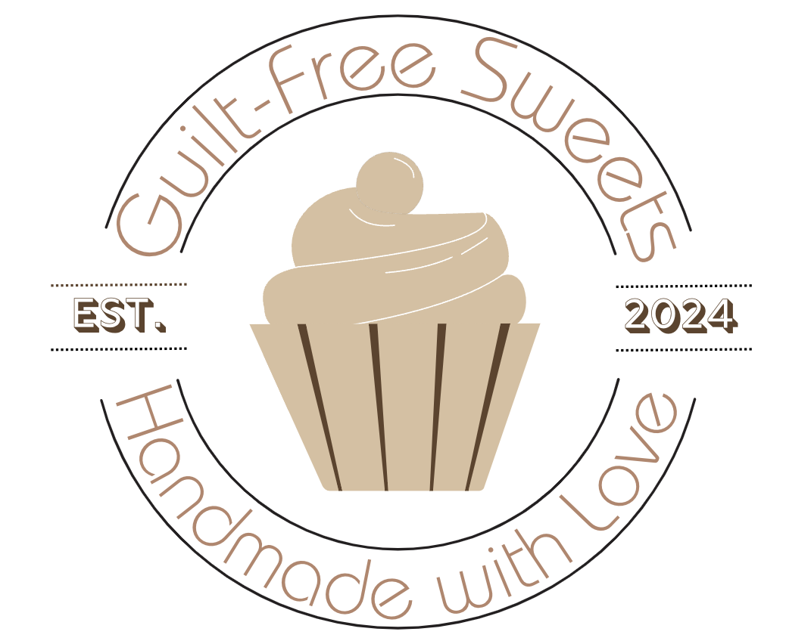
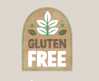

Graphic Design
Personal Logo
Elizabeth Villegas Logo
I designed a personal logo to incorporate into my work, allowing me to establish a distinctive branding presence. This logo will be featured on my business cards and throughout my designs, helping to create a cohesive and professional identity that reflects my unique style and expertise.

Website Logo
Web Design Project
For my Web Design class, we were tasked with rebranding and coding a garden-themed website. To align with the nature-inspired concept, I created a logo featuring a hummingbird and flowers, capturing the essence of the natural world. This design helps convey the website's focus on nature while adding a visually appealing and cohesive touch to the overall branding.

Construction Company Logo
Personal Project
I designed a logo for my father's construction company, keeping the concept simple and direct. The logo focuses solely on typography, with a clean and straightforward design that clearly conveys the brand's identity. I aimed for clarity and impact, ensuring the logo was both effective and to the point.

Branding Logo
Bakery Project Logo
I designed a logo for an application project where I developed a presentation for a mock app aimed at individuals with gluten allergies. The logo captures the essence of the app's mission—providing a clear and accessible solution for gluten-free living—while creating a strong, recognizable visual identity for the platform.

App Logo
Application Project
For one of my projects, I managed the entire branding for UH Digifest, which I rebranded as "Growth" to better reflect the theme of students transitioning into adulthood and pursuing their dream careers. This included designing a brochure, posters, and badges to promote the event. My goal was to create a cohesive visual identity that resonated with the message of personal and professional growth, while also generating excitement and engagement for the event.
